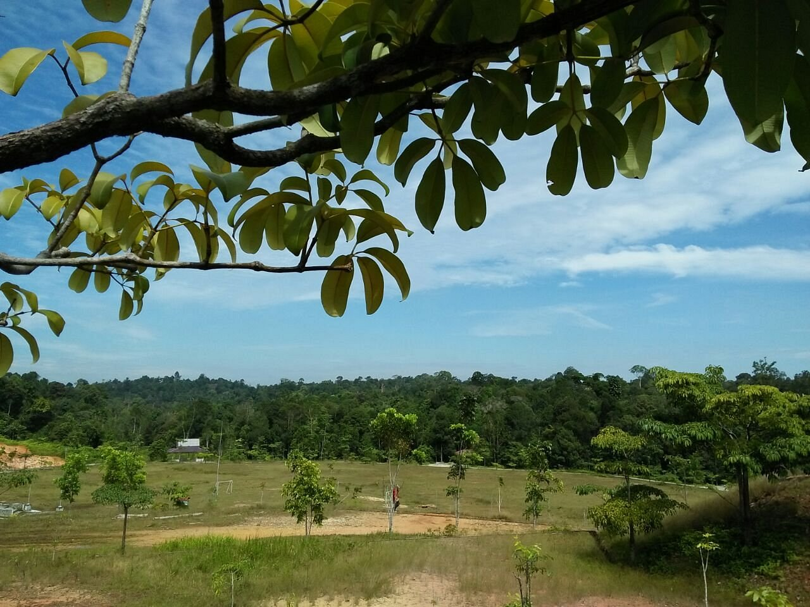

Sawit
&
Runoff
Pengaruh Perkebunan Kelapa Sawit Terhadap Runoff Kabupaten Siak, Riau
Pengaruh Perkebunan Kelapa Sawit Terhadap Runoff Kabupaten Siak, Riau


Kabupaten Siak adalah sebuah kabupaten yang terletak di Provinsi Riau, Indonesia. Ibukotanya berada di Siak Sri Indrapura. Daerah ini sangat terkenal dengan peninggalan sejarah Kesultanan Siak yang megah, serta perannya yang luar biasa dalam mendukung industri perkebunan nusantara.
Secara geografis, wilayah ini dianugerahi tanah yang sangat ideal. Hal ini menjadikan kelapa sawit sebagai tulang punggung perekonomian masyarakat lokal. Dengan penerapan Sistem Informasi Geografis (GIS), pengelolaan perkebunan di Kabupaten Siak kini dilakukan secara lebih pintar, terpantau, dan berorientasi pada pelestarian alam jangka panjang.
Eksplorasi data spasial Kabupaten Siak secara interaktif.
Ringkasan potensi kelapa sawit di Kabupaten Siak.
Total Luas Siak
8.556 km²
Total Lahan Sawit
320.5 Ribu Ha
Petani Sawit
15.420 Jiwa